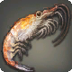
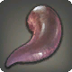

Frequently Asked Questions
Select a topic below to find out more.
 DH = Double Hook (Lv. 65 quest skill)
DH = Double Hook (Lv. 65 quest skill) TH = Triple Hook (Lv. 90 skill)
TH = Triple Hook (Lv. 90 skill) IC = Identical Cast (Lv. 79 skill)
IC = Identical Cast (Lv. 79 skill) PC = Prize Catch (Lv. 81 skill)
PC = Prize Catch (Lv. 81 skill) Slap/SS = Surface Slap (Lv. 71 skill)
Slap/SS = Surface Slap (Lv. 71 skill) P2 = Patience II (Lv. 60 quest skill)
P2 = Patience II (Lv. 60 quest skill)- P1 = Patience (Lv. 15 skill)
 AA = Angler's Art (stacks from the Lv. 15 trait)
AA = Angler's Art (stacks from the Lv. 15 trait) TF = Thaliak's Favor (Lv. 15 skill)
TF = Thaliak's Favor (Lv. 15 skill) MSB/MB = Makeshift Bait (Lv. 48 skill)
MSB/MB = Makeshift Bait (Lv. 48 skill)
Ability Combinations:
- DH-IC-DH = → →
- DH-IC-PC-TH = → → →
- TH-IC-TH = → →
- TH-IC-PC-TH = → → →
Combinations require varied amounts of
stacks to use and/or Hi-Cordial.
Both players and popular Ocean Fishing resources generally refer to routes by the fish-specific bonus objectives commonly completed on them or the ★★★★★ available on them.
As an example, the "shark route" is the specific route (Rhotano Sea ending at Day) where groups try to complete the bonus objective "Certifiable Shark Hunters" for the "What Did Sharks Do to You?" achievement.
This means that you are likely to see people referring to routes by what is classified as "Optional Objectives".
Dryskthota has separate options for Indigo and Ruby when registration is available. You will not be able to queue for Ruby unless you have completed the 4.0 main scenario quest "Stormblood."
You do not need FSH to be Lv. 70 to queue, but as a result of the quest required being a Lv. 70 MSQ you do need a Lv. 70 combat job.
The three Ocean Fishing baits are:
 Ragworm
Ragworm-  Krill
-  Plump Worm
It's advised to have all three.
They can be bought from the Merchant & Mender near the dock where you queue, or in the centre of the boat mid-voyage.
Versatile Lure is usable in Ocean Fishing but it is not advised to use if you are able to buy the baits. It provides longer bite times and lower bite rates on the important fish on average. You also cannot use it while following the timings in many Ocean Fishing guides.
When using a macro timer, once you press it you will use Cast and a timer will begin counting and display the units it's counting in whatever chat window you have /echo enabled in.
The below macro is a suitable all-purpose Ocean Fishing macro. In spectral currents it is important to have 2 - 8 and 11 and/or 12 displayed. The later timings are common ones that help differentiate between fish for voyage missions.
/ac "Cast" <wait.2>
/echo 2 <wait.1>
/echo 3 <wait.1>
/echo 4 <wait.1>
/echo 5 <wait.1>
/echo 6 <wait.1>
/echo 7 <wait.1>
/echo 8 <wait.4>
/echo 12 <wait.2>
/echo 14 <wait.2>
/echo 16 <wait.2>
/echo 18 <wait.2>
/echo 20 <wait.4>
/echo 24
/micon Cast
Be aware that the "Something bites!" message appears when you use Hook/a Hookset/Double or Triple Hook, not when the fish actually bites.
Also be aware that using another macro will stop the timer and pressing the macro again while you have a Cast out will restart the timer.
If you wish to make a macro with different timings, they can easily be made or the one provided can be adjusted to your needs. Each
/echoline is the time it's displaying, and the number in each
<wait.#>is the amount of time between each interval of time you are displaying.
You can also have a timer start when you use Mooch or Mooch II  by replacing the "Cast" in /ac "Cast" with
"Mooch" or "Mooch II" (you will also want to replace it in the /micon line).
by replacing the "Cast" in /ac "Cast" with
"Mooch" or "Mooch II" (you will also want to replace it in the /micon line).
These are both replacements for Hook that allow you to catch multiple fish at once. Use it when a fish bites just as you would use Hook . Gathering has no effect on the yields of these abilities in Ocean Fishing.
Double Hook does
not necessarily yield two and varies by fish:
- Indigo can yield: 2, 3-4, or 4
- Ruby can yield: 2, 3 or 4
Triple Hook does
not necessarily yield three and varies by fish:
- Indigo can yield: 3, 5-7, or 7
- Ruby can yield: 3, 5, or 7
Each fish these abilities work on has their yield fixed to one of the above values.
The fish which have the variable yields mean that using Double Hook will yield 3 or 4 and that Triple Hook
will yield 5, 6, or
7 at random.
These abilities don't work on the Fisher's Intuition fish and Spectral fish, meaning they will yield 1 if
you use them (but you will lose the GP).
Using these abilities under Patience has a 40% chance to fail and under Patience II has a 75% chance to fail.
Double Hook
| Yield | GP/Fish |
|---|---|
| 2 (+1) | 400 |
| 3 (+2) | 200 |
| 4 (+3) | 133 |
Triple Hook
| Yield | GP/Fish |
|---|---|
| 3 (+2) | 350 |
| 5 (+4) | 175 |
| 6 (+5) | 140 |
| 7 (+6) | 117 |
A blind Double Hook or Triple Hook is the use of these abilities
without the use of Identical Cast beforehand.
Being able to do this properly allows you to increase your yield and/or points.
- This is done by isolating them accurately via proper bait, knowledge of their bite strength and use of a timer.
- Most fish in spectral currents that you would want to use Double/Triple Hook on for achievements/points can be accurately identified and blind Double/Triple Hooked.
This is important on Indigo because Identical Cast cannot be used multiple times
in a row and is advised to use after Double or Triple Hooking a high-value fish to guarantee a
second bite of an otherwise rare fish.
This is important on Ruby because Ruby does not contain high-value fish worth spending GP on in the way
that Indigo does, so not spending GP on Identical Cast in order to use more Triple
Hook's is
advised.
The Hooksets are a replacement for Hook when under Patience or Patience II ; using them negates the "Inefficient
Hooking"  debuff you get from using it, which lowers your chance to catch a fish
when not using the correct Hookset.
Use them when a fish bites just as you would use Hook .
debuff you get from using it, which lowers your chance to catch a fish
when not using the correct Hookset.
Use them when a fish bites just as you would use Hook .
Precision Hookset  is used on weak ! ! bites. It's also used on some ferocious !!!!!! bites:
is used on weak ! ! bites. It's also used on some ferocious !!!!!! bites:
- Indigo: Spectral Sea Bo, Spectral Discus, Spectral Butterfly, Shooting Star, Ginkgo Fin, Seafaring Toad
- Ruby: Spectral Wrasse, Mizuhiki, Jewel of Plum Spring
Powerful Hookset  is used on strong !!!! bites and all other ferocious !!!!!! bites.
is used on strong !!!! bites and all other ferocious !!!!!! bites.
If you use Hook or the wrong
Hookset under Patience
there is a 40% chance you will fail to catch the fish.
If you use it under Patience II , there is a 75% chance you will fail.
No. If you had a Cast out that you did under Identical Cast when a spectral current ended or
began, you did not lose it because the buff fell off. The fish you used Identical Cast on is still
going to bite.
What is going to bite under any circumstance is determined at the time when you use Cast , not when the fish bites.
Fisher's Intuition is a buff that you gain upon catching a specific quantity of specific fish that allows you to then catch another, unique fish. When you catch the required fish, the buff is immediately triggered. You will hear the heartbeat sound and get a message that displays across your screen while you get the buff.
There are two Intuition fish at every stop, one outside of the spectral current and one in it.
Outside of the spectral current:
- The buff will be 60 seconds.
- While you have the buff, you have the Intuition fish added to the catch pool.
- If you use a specific Ocean Fishing bait, you may be able to catch it.
During the spectral current:
- The buff will be 15 or 45 seconds.
- If you get the buff during a specific Time Frame, you will have the Intuition fish added to the catch pool.
- Each spectral current Intuition fish is available during one Time Frame, but the buff can be triggered during any.
- 9/11 of these Intuition fish require a non-Ocean Fishing bait to be able to catch them.
- These fish are rare and are the Ocean Fishing equivalent of legendary big fish.
The buff can fall off while you have a Cast out and the fish can still bite.
- You not only get a specific dialogue message when you trigger the buff, you also get one when it wears off if the fish isn't going to bite. Therefore, if you don't get a message about the fish leaving when the buff wears off then you know the fish is going to bite.
- A unique chime sound effect also plays when the buff wears off and the fish is going to bite in addition to not getting the second message about the fish leaving. You can hear the sound effect when the buff wears off at the end of this video.
The Lv. 50 trait Fisher's Instinct makes it so your Fisher's Intuition buff has a chance to refresh if you catch one of the fish that triggers the buff during it, allowing you to "rebuild" the buff without catching everything necessary in the case of buffs where multiple [of a] fish are required. This is not usually worth going out of your way to try to proc due to the length of the Intuition buffs in Ocean Fishing, and will not count if the fish lands in your inventory on a Cast you did while the buff was up but fell off during.
There are seven non-Ocean Fishing baits which are usable in Ocean Fishing, though they are not usable everywhere.
Six baits are usable in one spectral current and Squid Strip is usable in two. These baits are each required to catch one ★★★★★ fish, except for Squid Strip which is required for two. In addition to the ★★★★★ fish, each bait can catch the common fish available in the spectral currents they are usable.
These baits have varied level requirements, all higher then Lv. 1.
Indigo:
-
Pill Bug (Lv. 5) is used to catch Seafaring Toad
 in Bloodbrine Spectral Current
in Bloodbrine Spectral Current - Rat Tail (Lv. 15) is used to catch Stonescale in Rhotano Spectral Current
-
Shrimp Cage Feeder (Lv. 25) is used to catch Coral Manta
 in Southern
Merlthor Spectral Current
in Southern
Merlthor Spectral Current - Heavy Steel Jig (Lv. 37) is used to catch Elasmosaurus in Northern Merlthor Spectral Current
- Glowworm (Lv. 45) is used to catch Sothis in Galadion Spectral Current
- Squid Strip (Lv. 80) is used to catch Hafgufa in Cieldalaes Spectral Current
Ruby:
-
Stonefly Nymph (Lv. 51) is used to catch Jewel of Plum Spring
 in One
River Spectral Current
in One
River Spectral Current -
Squid Strip (Lv. 80) is used to catch Hells' Claw
 in Ruby Spectral Current
in Ruby Spectral Current - Mackerel Strip (Lv. 90) is used to catch Taniwha in Sirensong Spectral Current
The only stat that matters in Ocean Fishing is GP. No amount of GP is too high. This means that at Lv. 100 you still want the best gear you can or care to get so you can have high GP.
1002 GP is currently the highest amount attainable in i690 gear. With food (HQ Nasi Goreng, +58), the highest GP value currently reachable is 1060.
Gathering and perception have no hard breakpoints in Ocean Fishing, nor does gathering affect Double/Triple Hook yields.
The only fish impacted by stats are the ★★★★★ fish (fabled/blue fish). At gathering ratings exceedingly below values relevant in the patch they came out they have significantly longer bite times and high escape rates, but they do not have hard minimums that need to be met. You will want to be at or above the breakpoints below to have the highest chance to catch them.
Advised gathering for ★★★★★ fish:
- 1500: Sothis, Stonescale, Coral Manta, Elasmosaurus
- 1800: Hafgufa, Seafaring Toad, Placodus
- 2900: Taniwha, Glass Dragon, Jewel of Plum Spring, Hells' Claw*
*The gathering for these is not 100% certain yet but it's probably 2900-3000.
Indigo: 992+ GP, if you also eat food to reach 1050-1060.
- This amount is flexible because it depends on how you use your abilities, what combos you plan to use, and how you use Angler's Art stacks.
- 1002 base GP is only advised if you are planning to use DH-IC-PC-TH at 3 Angler's Art stacks often and you press your abilities very quickly. You regenerate 8 GP every ~3s so if you expect to spend ~3s using the first three steps of this combination, then 994 GP is fine.
- At least 992 base GP is advised because at least this amount with HQ Nasi Goreng has the highest potential for an extra use of TH or PC-DH depending on the situation.
Ruby: 998 GP if you also eat food to reach 1056, is the amount that is most likely to be useful.
- The highest amount you can get is advised because Ruby does not involve using set combinations of skills, however the extra 4 GP will likely notably be useful if you use GP regularly before spectral currents or in atypical ways.
If you don't eat food, 1002 GP is the ideal GP you could have. 950 GP is the recommended minimum.

This graphic for Indigo ability combinations shows the most relevant GP breakpoints.
- The "Minimum GP required" is showing how much GP you need assuming no GP regen between ability use, in addition to the specified Angler's Art stacks and time you will need to wait to regen GP (if noted), to execute the specific combos.
- It is not efficient, viable, or often even possible, to wait more than 33s.
- The most common ability usage is DH-IC-PC-TH so operating around this combination is advised.
- TH-IC-TH is not advised for regular use. If you prefer using it then at least 1018 GP is advised as having 6 stacks in a current is common.
The graphic is not relevant for Ruby as these combinations are not used there.
If your desired base GP level is less than 1002, the Lodestar Fishing Rod is BiS. The Lodestar Fishing Rod has 9 GP while a HQ Claro Walnut Fishing Rod can be melded with 10 so if you intend to make use of max GP then it cannot be used.
This is the EW FSH relic rod and comes with a unique trait trait: Has a chance to reduce the GP cost of Powerful Hookset and Precision Hookset by 50%. Any version of the relic once it has the trait is the same for Ocean Fishing. Later stages of the relic do not have a higher chance for the trait to proc and the extra stats the later stages have are irrelevant.
This has a ~15% chance to occur, potentially saving GP while building Angler's Art stacks or otherwise using Patience. This does not make Patience more viable to use in new ways, but makes it safer/easier to use where it is already.
If you do not use Patience at all, then there is no point in using the Lodestar Rod and you may as well use a HQ Claro Walnut Fishing Rod if it's melded with 10 GP, or the Lodestar Rod will be equivalent to any other rod melded with 9 GP.
Spectral currents have a chance to occur whenever someone on the boat catches a Spectral fish, before 1:30 left at the stop. These are the fish whose names start with named "Spectral" or Spectresaur. After 1:30 remaining it is not possible for a spectral current to occur. Every Spectral fish can be caught with every Ocean Fishing bait, but each one has a bait that is more likely to catch it than the others. Catching large-sized Spectral fish does not provide greater chances. Only one spectral current can occur per stop. After a spectral current occurs, the weather will be Clear Skies in which the Spectral fish cannot be caught.
As stated, spectral currents have a chance to occur on Spectral fish catch. It is never guaranteed that a Spectral fish will proc, but the odds of one proccing per individual catch does vary based on how many people are on the boat in total. The chance of proccing on catch is lower the more people are on the boat because more Spectral fish are being caught in total. The Spectral fish have ~30% chance to escape when you try to catch them as well.
Spectral current proc chance
| CAUGHT | PROC |
|---|---|
| 1500 | 72 |
| 4.80% | |
| CAUGHT | PROC |
|---|---|
| 1500 | 1281 |
| 85.40% | |
How long is a spectral current? How do I make one extended?
The default duration of a spectral current is 2 minutes.
If one is in progress when the timer for the stop reaches 0:30, it will be cut off and end early.
Spectral currents can be extended to a maximum of 3 minutes in two ways:
- If a spectral current is skipped at one stop, the next current that occurs will be extended to 3 minutes. There is also a greater chance for one to occur on every Spectral fish catch until the next current is triggered. This does not stack, meaning skipping multiple spectral currents will not provide any extra benefit over skipping one.
- If a spectral current occurs below 2:30 left on the stop and is cut short, the time that was cut off is added to the one that occurs at the next stop to a maximum of 3 minutes.
Extensions also apply to extended spectral currents. For example, if an extended spectral current that would have been 3 minutes occurs below 3:30 left on the stop and is cut short, the time that was cut off is added to the next one that occurs to a maximum of 3 minutes.
Seagulls:
- Gullstorm - 90s - increased large-size chance
Dolphins:
 Auroral Flipper - 120s - increased spectral current trigger chance
Auroral Flipper - 120s - increased spectral current trigger chance Cetaceous Speed - 90s - increased GP regeneration rate (+10/tick)
Cetaceous Speed - 90s - increased GP regeneration rate (+10/tick)
You will get both Auroral Flipper and Cetaceous Speed if a spectral current hasn't yet
occurred in the stop. If one has, you will only get Cetaceous Speed . Both instances count towards
progress for getting the Dolphin Calf minion.
There are no player actions that result in a discernible increase in scoutings or buffs.
After extensive testing, skills that were rumoured to increase scoutings or buffs were not found to have any effect on either.
Based on data collected it seems spectral currents prevent scoutings but buffs resulting from a scouting that happened before a spectral current occurred can still proc during one.
No routes affect the likelihood of dolphins or seagulls appearing or staying more than others.
No. The weather in Ocean Fishing is different per instance and is unable to be predicted.
Boats that leave at the exact same time can have different weathers and there is no way to know what the weather will be until you are on the boat. Skywatchers and weather forecasting tools that work elsewhere in-game do not work in Ocean Fishing.
The first cutscene can show inaccurate weather to what it will actually be at the first stop because it will display what weather was happening in Limsa Lominsa when the boat left, but the cutscenes introducing the second and third stops will show weather accurately.
If a resource using packet capture has weather data, it also will not be accurate and instead will be showing the weather that it was in Limsa at the time the fish were caught.
For two of the three, yes.
THE FIRST MISSION is to catch a specific quantity of a specific species of fish. This mission is always the same for each route that ends at a specific stop.
THE SECOND MISSION is the same on every route: "Catch fish rated ★★★ or higher: 0/5."
THE THIRD MISSION is the one which is not consistent every time you are on a given route, but it is always to catch fish of a specific bite strength in a specific quantity.
Routes with the same first mission have the same set of potential third missions.
Each set has one mission for weak ! ! , strong !!!! and ferocious !!!!!! bites.
The table below specifies each set of third missions relative to the first missions.
When you catch a fish in-game that is eligible for the bonus objective achievements or first voyage missions, they will have small icons next to them in the recent catch window where your points are displayed, or the Potential Catch window that shows up when you click on the recent catch one.
The ones for all of the potential first Voyage Missions look like:
 Shark
Shark Jellyfish
Jellyfish Fugu
Fugu- Crab
- Shrimp
 Shellfish
Shellfish Squid
Squid
On Indigo, every stop won't necessarily have a fish eligible for this mission.